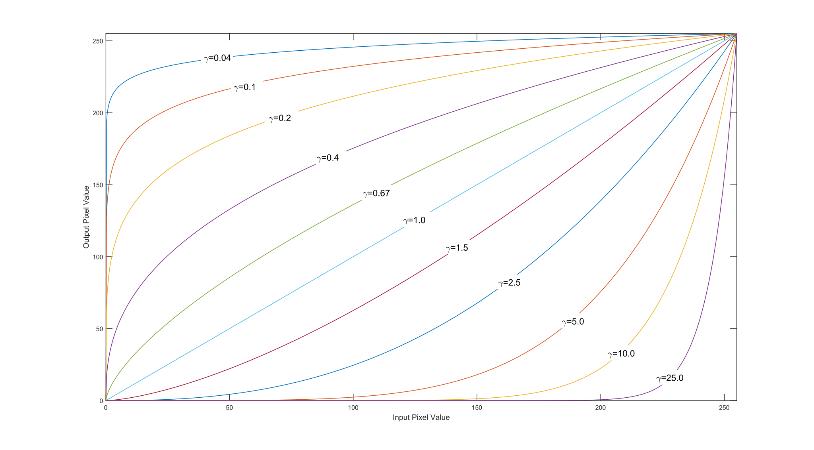

OpenCV入门学习-核心功能（上）
1. 调整图像的对比度和亮度
OpenCV是计算机视觉领域的重要工具，本节将介绍如何使用像素变换调整图像的亮度和对比度，并通过
Gamma 校正优化图像质量。
1.1. 理论基础
图像处理中的像素变换 指输出像素仅依赖输入像素值的操作。调整亮度与对比度的公式为：\[\nonumber g(i,j) = \alpha \cdot f(i,j) +
\beta\]
α（增益） ：控制对比度（建议范围：\(1.0-3.0\) ）。β（偏置） ：控制亮度（建议范围：\(0-100\) ）。
通过 cv::saturate_cast<uchar> 确保计算结果在 \(0-255\) 范围内，避免数值溢出。
1.2. 代码实现
1.2.1. 核心代码示例
1 2 3 4 5 6 7 8 9 10 11 12 13 14 15 16 17 18 19 20 21 22 23 24 25 26 27 28 29 30 31 32 33 34 35 36 37 38 39 #include <opencv2/opencv.hpp> #include <iostream> int main () cv::Mat image = cv::imread ("lena.jpg" ); if (image.empty ()) { std::cout << "Failed to load image!" << std::endl; return -1 ; } cv::Mat new_image = cv::Mat::zeros (image.size (), image.type ()); double alpha = 1.0 ; int beta = 0 ; std::cout << "Enter alpha [1.0-3.0]: " ; std::cin >> alpha; std::cout << "Enter beta [0-100]: " ; std::cin >> beta; for (int y = 0 ; y < image.rows; y++) { for (int x = 0 ; x < image.cols; x++) { for (int c = 0 ; c < image.channels (); c++) { new_image.at <cv::Vec3b>(y, x)[c] = cv::saturate_cast <uchar>( alpha * image.at <cv::Vec3b>(y, x)[c] + beta ); } } } cv::imshow ("Original" , image); cv::imshow ("Adjusted" , new_image); cv::waitKey (0 ); return 0 ; }
1.2.2. 代码说明
像素遍历 ：通过三重循环访问每个像素的BGR通道。
数值饱和处理 ：cv::saturate_cast<uchar>确保结果在合理范围内。
高效替代方案 ：可使用cv::Mat::convertTo替代循环：
1 image.convertTo (new_image, -1 , alpha, beta);
1.3. 实际应用示例
调整 α=2.2 和 β=50
可显著提升暗图像的亮度，但可能导致高光区域过曝（如云层细节丢失）。此时可结合
\(\gamma\) 校正优化。
1.4. Gamma 校正
Gamma 校正通过非线性变换调整亮度：\[\nonumber O = \left( \frac{I}{255}
\right)^\gamma \times 255\]
γ < 1 ：提升暗部亮度。γ > 1 ：增强亮部对比度。

图1.不同 \(\gamma\) 值对应的图像
1.4.1. 实现代码
1 2 3 4 5 6 7 8 9 10 11 12 13 cv::Mat lookupTable (1 , 256 , CV_8U) ;uchar* p = lookupTable.ptr (); double gamma = 0.4 ;for (int i = 0 ; i < 256 ; ++i) { p[i] = cv::saturate_cast <uchar>(pow (i / 255.0 , gamma) * 255.0 ); } cv::Mat corrected; cv::LUT (image, lookupTable, corrected);
1.5. 性能优化提示
避免逐像素操作 ：优先使用内置函数（如cv::convertTo和cv::LUT）。预计算查找表 ：减少重复计算，提升 Gamma
校正效率。
通过调整α、β和 \(\gamma\)
值，可灵活控制图像效果。这些方法虽基础，但能为复杂图像处理任务奠定基础。
2. 离散傅里叶变换
2.1. 什么是离散傅里叶变换？
离散傅里叶变换（DFT）是一种将图像从空间域转换到频率域的数学工具。通过分解图像的正弦和余弦分量，DFT可以帮助我们分析图像中的几何结构特征。其数学表达式为：\[
F(k, l) = \sum_{i=0}^{N-1} \sum_{j=0}^{N-1}
f(i,j)e^{-i2\pi\left(\frac{jk}{N}+\frac{ik}{N}\right)} \nonumber
\] 其中，复数结果可表示为：\[
e^{ix} = \cos x + i\sin x \nonumber
\]
2.2. OpenCV实现DFT的关键步骤
2.2.1. 扩展图像至最佳尺寸
DFT的计算效率与图像尺寸相关，最佳尺寸通常是2、3、5的倍数。通过cv::getOptimalDFTSize()获取最优尺寸，并用cv::copyMakeBorder()填充图像边界：
1 2 3 4 5 cv::Mat padded; int rows_pad = cv::getOptimalDFTSize (I.rows); int cols_pad = cv::getOptimalDFTSize (I.cols); cv::copyMakeBorder (I, padded, 0 , rows_pad - I.rows, 0 , cols_pad - I.cols, cv::BORDER_CONSTANT, cv::Scalar::all (0 ));
2.2.2. 创建复数矩阵
DFT结果为复数，需将图像转换为浮点类型并合并实部与虚部：
1 2 3 4 5 6 cv::Mat planes[] = { cv::Mat_ <float >(padded), cv::Mat::zeros (padded.size (), CV_32F) }; cv::Mat complexI; cv::merge (planes, 2 , complexI);
2.2.3. 执行DFT变换
使用cv::dft()进行傅里叶变换，支持原地计算：
1 cv::dft (complexI, complexI);
2.2.4. 计算幅度谱
将复数结果分解为实部和虚部，计算幅度并转为对数尺度：
1 2 3 4 5 cv::split (complexI, planes); cv::magnitude (planes[0 ], planes[1 ], planes[0 ]); cv::Mat magI = planes[0 ]; magI += cv::Scalar::all (1 ); cv::log (magI, magI);
2.2.5. 频谱中心化与归一化
交换频谱象限使低频分量居中，并进行归一化以便显示：
1 2 3 4 5 6 7 8 9 10 11 magI = magI (cv::Rect (0 , 0 , magI.cols & -2 , magI.rows & -2 )); int cx = magI.cols / 2 , cy = magI.rows / 2 ; cv::Mat q0 (magI, cv::Rect(0 , 0 , cx, cy)) ; cv::Mat q1 (magI, cv::Rect(cx, 0 , cx, cy)) ; cv::Mat q2 (magI, cv::Rect(0 , cy, cx, cy)) ; cv::Mat q3 (magI, cv::Rect(cx, cy, cx, cy)) ; q0. copyTo (tmp); q3. copyTo (q0); tmp.copyTo (q3); q1. copyTo (tmp); q2. copyTo (q1); tmp.copyTo (q2); cv::normalize (magI, magI, 0 , 1 , cv::NORM_MINMAX);
2.3. 应用场景示例
通过分析频谱的亮度分布，可以检测图像中的几何方向特征。例如：
水平文本 ：频谱中会出现垂直方向的高亮线，对应文本的横向排列。旋转文本 ：高亮点会随文本旋转方向偏移，通过此偏移可计算校正角度。
2.4. 完整代码示例
1 2 3 4 5 6 7 8 9 10 11 12 13 14 15 16 17 18 19 20 21 22 23 24 25 26 27 28 29 30 31 32 33 34 35 36 37 38 39 40 41 42 43 44 45 46 47 48 49 50 51 52 53 54 55 56 57 58 59 60 61 62 63 64 65 66 67 68 69 70 71 72 73 74 #include <opencv2/core.hpp> #include <opencv2/imgproc.hpp> #include <opencv2/highgui.hpp> #include <iostream> int main () cv::Mat I = cv::imread ("dog.jpg" , cv::IMREAD_GRAYSCALE); if (I.empty ()) { std::cerr << "Error: Could not load image" << std::endl; return -1 ; } cv::Mat padded; int rows_opt = cv::getOptimalDFTSize (I.rows); int cols_opt = cv::getOptimalDFTSize (I.cols); cv::copyMakeBorder (I, padded, 0 , rows_opt - I.rows, 0 , cols_opt - I.cols, cv::BORDER_CONSTANT, cv::Scalar::all (0 )); cv::Mat planes[] = { cv::Mat_ <float >(padded), cv::Mat::zeros (padded.size (), CV_32F) }; cv::Mat complexI; cv::merge (planes, 2 , complexI); cv::dft (complexI, complexI); cv::split (complexI, planes); cv::magnitude (planes[0 ], planes[1 ], planes[0 ]); cv::Mat magI = planes[0 ]; magI += cv::Scalar::all (1 ); cv::log (magI, magI); magI = magI (cv::Rect (0 , 0 , magI.cols & -2 , magI.rows & -2 )); int cx = magI.cols / 2 ; int cy = magI.rows / 2 ; cv::Mat q0 (magI, cv::Rect(0 , 0 , cx, cy)) ; cv::Mat q1 (magI, cv::Rect(cx, 0 , cx, cy)) ; cv::Mat q2 (magI, cv::Rect(0 , cy, cx, cy)) ; cv::Mat q3 (magI, cv::Rect(cx, cy, cx, cy)) ; cv::Mat tmp; q0. copyTo (tmp); q3. copyTo (q0); tmp.copyTo (q3); q1. copyTo (tmp); q2. copyTo (q1); tmp.copyTo (q2); cv::normalize (magI, magI, 0 , 1 , cv::NORM_MINMAX); cv::imshow ("Input Image" , I); cv::imshow ("Spectrum Magnitude" , magI); cv::waitKey (0 ); return 0 ; }
通过上述步骤，OpenCV实现了从空间域到频率域的高效转换，为图像分析与增强提供了重要基础。
3. OpenCV文件输入输出
在OpenCV中，文件输入输出（IO）是实现数据持久化的重要功能。通过XML、YAML和JSON格式，开发者可以方便地存储和读取配置参数、矩阵数据甚至自定义数据结构。本文将详细介绍如何利用OpenCV的cv::FileStorage类实现这些操作。
3.1. 文件操作基础
使用OpenCV进行文件IO需借助cv::FileStorage类。其核心步骤包括打开文件 、读写数据 和关闭文件 。以下示例展示了文件的基本操作：
1 2 3 cv::FileStorage fs ("output.yml" , cv::FileStorage::WRITE) ; fs.release ();
文件扩展名决定输出格式（如.xml、.yml、.json），还支持压缩（如.xml.gz）。读写模式包括WRITE、READ和APPEND。
3.2.
基本数据类型与OpenCV结构的读写
3.2.1. 文本与数字
1 2 3 4 5 6 fs << "iterationNr" << 100 ; int itNr;fs["iterationNr" ] >> itNr;
3.2.2. OpenCV矩阵（cv::Mat）
1 2 3 4 5 6 7 8 9 cv::Mat R = cv::Mat_<uchar>::eye (3 , 3 ); cv::Mat T = cv::Mat_<double >::zeros (3 , 1 ); fs << "R" << R << "T" << T; fs["R" ] >> R; fs["T" ] >> T;
3.3. 序列与映射的读写
3.3.1. 序列（数组）
序列用[ ]包裹：
1 2 3 4 5 6 7 8 9 10 11 12 fs << "strings" << "[" ; fs << "image1.jpg" << "Awesomeness" << "../data/baboon.jpg" ; fs << "]" ; cv::FileNode node = fs["strings" ]; if (node.type () == cv::FileNode::SEQ) { for (cv::FileNodeIterator it = node.begin (); it != node.end (); ++it) { std::string value = (std::string)*it; } }
3.3.2. 映射（字典）
映射用{ }包裹：
1 2 3 4 5 6 7 8 9 fs << "Mapping" << "{" ; fs << "One" << 1 << "Two" << 2 ; fs << "}" ; cv::FileNode mapping = fs["Mapping" ]; int one = (int )mapping["One" ];int two = (int )mapping["Two" ];
3.4. 自定义数据结构的序列化
要为自定义类实现序列化，需定义write和read方法：
1 2 3 4 5 6 7 8 9 10 11 12 13 14 15 16 17 18 19 20 21 22 23 24 25 26 27 28 29 30 class MyData {public : int A; double X; std::string id; void write (cv::FileStorage& fs) const fs << "{" << "A" << A << "X" << X << "id" << id << "}" ; } void read (const cv::FileNode& node) A = (int )node["A" ]; X = (double )node["X" ]; id = (std::string)node["id" ]; } }; static void write (cv::FileStorage& fs, const std::string&, const MyData& x) x.write (fs); } static void read (const cv::FileNode& node, MyData& x, const MyData& default_value = MyData()) if (node.empty ()) x = default_value; else x.read (node); }
使用示例：
1 2 3 MyData data; fs << "MyData" << data; fs["MyData" ] >> data;
3.5. 示例代码与输出结果
3.5.1. 完整写入示例
1 2 3 4 5 cv::FileStorage fs ("output.yml" , cv::FileStorage::WRITE) ;fs << "iterationNr" << 100 ; fs << "R" << cv::Mat::eye (3 , 3 , CV_8U); fs << "MyData" << MyData (97 , CV_PI, "mydata1234" ); fs.release ();
3.5.2. 文件输出示例（YAML）
1 2 3 4 5 6 7 8 9 10 iterationNr: 100 R: !!opencv -matrix rows: 3 cols: 3 dt: u data: [1 , 0 , 0 , 0 , 1 , 0 , 0 , 0 , 1 ] MyData: A: 97 X: 3.14159 id: mydata1234
3.6. 注意事项
节点不存在时的处理 ：读取时若节点不存在，可返回默认值：
1 2 MyData defaultData; fs["NonExisting" ] >> defaultData;
文件格式兼容性 ：JSON文件需OpenCV
3.0及以上版本支持。
压缩文件 ：使用.gz扩展名可自动压缩文件，如output.xml.gz。
通过灵活运用OpenCV的序列化功能，开发者可以高效管理复杂数据结构，为计算机视觉项目提供可靠的数据存储方案。
4. 并行化卷积运算
4.1. 目标
演示如何利用OpenCV的cv::parallel_for_框架轻松实现代码并行化。以图像卷积运算为例，对比分析顺序执行与并行执行的性能差异。
4.2. 前提条件
并行框架支持
OpenCV需在编译时启用并行框架支持。OpenCV
4.5支持的并行框架按优先级排序如下：
Intel TBB（需显式启用）
OpenMP（需显式启用）
APPLE GCD（自动调用）
Windows并发库（自动调用）
Pthreads
竞态条件管理
卷积运算属于单线程写多线程读 场景，不存在竞态条件。而多线程共同修改同一内存区域时（如特征检测），需采用同步机制。
4.3. 卷积理论基础
卷积通过滑动内核矩阵计算像素加权和，公式表示为： \[
\text{output}(i, j) = \sum_{k=-\frac{n}{2}}^{\frac{n}{2}}
\sum_{l=-\frac{n}{2}}^{\frac{n}{2}} \text{kernel}(k, l) \cdot
\text{src}(i + k, j + l) \nonumber
\] 其中，内核尺寸需为奇数以确保中心锚点存在。
4.4. 顺序卷积实现
1 2 3 4 5 6 7 8 9 10 11 12 13 14 15 16 17 18 19 20 21 void conv_seq (cv::Mat src, cv::Mat &dst, cv::Mat kernel) int rows = src.rows, cols = src.cols; dst = cv::Mat (rows, cols, src.type ()); int sz = kernel.rows / 2 ; cv::copyMakeBorder (src, src, sz, sz, sz, sz, cv::BORDER_REPLICATE); for (int i = 0 ; i < rows; i++) { uchar *dptr = dst.ptr <uchar>(i); for (int j = 0 ; j < cols; j++) { double value = 0 ; for (int k = -sz; k <= sz; k++) { uchar *sptr = src.ptr <uchar>(i + sz + k); for (int l = -sz; l <= sz; l++) { value += kernel.at <double >(k + sz, l + sz) * sptr[j + sz + l]; } } dptr[j] = cv::saturate_cast <uchar>(value); } } }
4.5. 并行卷积实现
4.5.1. 自定义并行循环体
1 2 3 4 5 6 7 8 9 10 11 12 13 14 15 16 17 18 19 20 21 22 23 24 25 26 27 28 29 30 class ParallelConvolution : public cv::ParallelLoopBody {private : cv::Mat m_src, &m_dst; cv::Mat m_kernel; int sz; public : ParallelConvolution (cv::Mat src, cv::Mat &dst, cv::Mat kernel) : m_src (src), m_dst (dst), m_kernel (kernel) { sz = kernel.rows / 2 ; } virtual void operator () (const cv::Range &range) const CV_OVERRIDE for (int r = range.start; r < range.end; r++) { int i = r / m_src.cols, j = r % m_src.cols; double value = 0 ; for (int k = -sz; k <= sz; k++) { uchar *sptr = m_src.ptr <uchar>(i + sz + k); for (int l = -sz; l <= sz; l++) { value += m_kernel.at <double >(k + sz, l + sz) * sptr[j + sz + l]; } } m_dst.ptr <uchar>(i)[j] = cv::saturate_cast <uchar>(value); } } }; ParallelConvolution obj (src, dst, kernel) ;cv::parallel_for_ (cv::Range (0 , rows * cols), obj);
4.5.2. 使用Lambda表达式（C++11）
1 2 3 4 5 6 7 8 9 10 11 12 13 cv::parallel_for_ (cv::Range (0 , rows * cols), [&](const cv::Range &range) { for (int r = range.start; r < range.end; r++) { int i = r / cols, j = r % cols; double value = 0 ; for (int k = -sz; k <= sz; k++) { uchar *sptr = src.ptr <uchar>(i + sz + k); for (int l = -sz; l <= sz; l++) { value += kernel.at <double >(k + sz, l + sz) * sptr[j + sz + l]; } } dst.ptr <uchar>(i)[j] = cv::saturate_cast <uchar>(value); } });
4.6. 性能对比
对512×512图像使用不同内核尺寸测试得到以下结果：
顺序执行
0.0954
0.0301
全图分块并行
0.0247
0.0117
按行分块并行
0.0249
0.0118
并行实现通常可获得4-7倍加速比 ，实际性能取决于CPU核心数与任务调度策略。
4.7. 总结
OpenCV cv::parallel_for_
自动划分计算任务，极大简化并行代码开发。
通过继承cv::ParallelLoopBody或使用Lambda表达式，均可实现高效并行。
线程数可通过cv::setNumThreads()调整，任务划分粒度由nstripes参数控制。
通过合理使用并行框架，可显著提升图像处理算法的运行时效率。
5. 代码向量化
5.1. 目标
本教程介绍如何利用OpenCV的Universal
Intrinsics 特性对C++代码进行向量化优化，利用现代处理器的SIMD指令实现运行时加速。内容涵盖SIMD基础概念、寄存器操作及实际卷积算法向量化实现。
5.2. SIMD与Universal
Intrinsics基础
5.2.1. SIMD技术原理
SIMD（单指令多数据）允许处理器使用宽寄存器同时对多个数据元素执行相同操作。例如：
128位寄存器可同时处理4个32位浮点数
256位寄存器可处理8个32位整数
5.2.2. 通用内联函数特性
OpenCV Universal Intrinsics提供跨平台SIMD抽象层，支持多种指令集：
1 2 3 cv::v_uint8 cv::v_float32
5.2.3. 寄存器类型
变长寄存器 ：自动适配硬件最大位宽
1 2 cv::v_float32 reg; int n = reg.nlanes;
定长寄存器 ：明确指定位宽
5.3. 核心操作实践
5.3.1. 数据加载与存储
1 2 3 4 5 6 7 float src[8 ];cv::v_float32x4 reg = cv::v_load (src); alignas (16 ) float dst[4 ];cv::v_store (dst, reg);
5.3.2. 向量运算
1 2 3 4 5 6 7 8 9 cv::v_float32 a = cv::v_load (ptr_a); cv::v_float32 b = cv::v_load (ptr_b); cv::v_float32 sum = a + b; cv::v_float32 prod = a * b; cv::v_float32 cmp_mask = (a > b);
5.3.3. 规约与掩码操作
1 2 3 4 5 float max_val = cv::v_reduce_max (a);cv::v_float32 result = cv::v_select (cmp_mask, a, b);
5.4. 卷积算法向量化实战
5.4.1. 原始标量实现
1 2 3 4 5 6 7 8 9 10 11 12 void scalar_conv1d (cv::Mat src, cv::Mat &dst, cv::Mat kernel) int sz = kernel.cols/2 ; cv::copyMakeBorder (src, src, 0 , 0 , sz, sz, cv::BORDER_REPLICATE); for (int i=0 ; i<src.cols; ++i){ float sum = 0 ; for (int k=-sz; k<=sz; ++k){ sum += src.at <uchar>(i+k+sz) * kernel.at <float >(k+sz); } dst.at <uchar>(i) = cv::saturate_cast <uchar>(sum); } }
5.4.2. SIMD向量化改造
1 2 3 4 5 6 7 8 9 10 11 12 13 14 15 16 17 18 19 20 21 22 void vectorized_conv1d (cv::Mat src, cv::Mat kernel, float * ans) cv::Mat src_32; src.convertTo (src_32, CV_32F); const int step = cv::v_float32x4::nlanes; for (int k=0 ; k<kernel.cols; ++k){ cv::v_float32x4 kernel_wide = cv::v_setall_f32 (kernel.at <float >(k)); int i=0 ; for (; i+step < src.cols; i+=step){ cv::v_float32x4 window = cv::v_load (&src_32. at <float >(i+k)); cv::v_float32x4 sum = cv::v_load (ans+i) + window * kernel_wide; cv::v_store (ans+i, sum); } for (; i<src.cols; ++i){ ans[i] += src_32. at <float >(i+k) * kernel.at <float >(k); } } }
5.5. 二维卷积扩展
通过水平+垂直方向的一维卷积组合实现：
1 2 3 4 5 6 7 8 9 10 11 12 13 14 15 16 17 18 19 20 21 22 void convolute_2d (cv::Mat src, cv::Mat &dst, cv::Mat kernel) int ksize = kernel.rows/2 ; cv::copyMakeBorder (src, src, ksize, ksize, 0 , 0 , cv::BORDER_REPLICATE); for (int i=0 ; i < src.rows; ++i){ for (int k=0 ; k<kernel.rows; ++k){ float tmp[1024 ] = {0 }; vectorized_conv1d (src.row (i+k), kernel.row (k), tmp); int j=0 ; for (; j+4 <src.cols; j+=4 ){ cv::v_float32x4 sum = cv::v_load (&dst.at <float >(i,j)) + cv::v_load (&tmp[j]); cv::v_store (&dst.at <float >(i,j), sum); } for (; j<src.cols; ++j){ dst.at <float >(i,j) += tmp[j]; } } } }
5.6. 性能对比与建议
测试显示向量化版本相比标量实现可获得2-5倍加速
实际性能取决于：
CPU支持的SIMD指令集（SSE4/AVX2/AVX512）
数据对齐情况
算法内存访问模式
优化建议 ：
优先处理连续内存块
尽量使用vx_load_aligned访问对齐数据
利用v_reduce系列函数代替标量累计
通过v_select实现条件分支消除
通过合理使用Universal
Intrinsics，开发者可以在不损失代码可移植性的前提下，充分利用现代处理器的并行计算能力。建议结合性能分析工具，针对热点代码进行定向优化。
6. 参考资料
[1] OpenCV官方文档